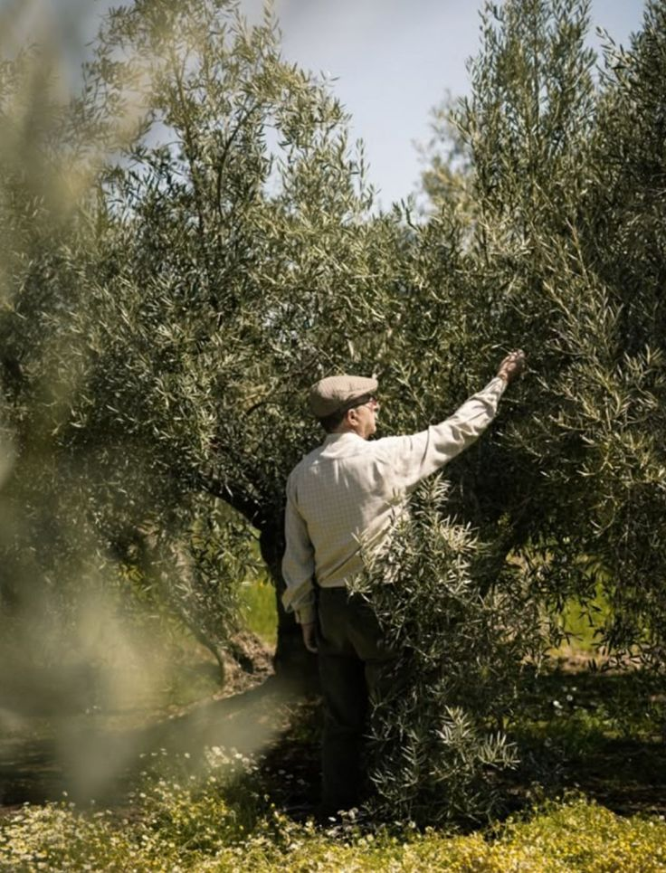
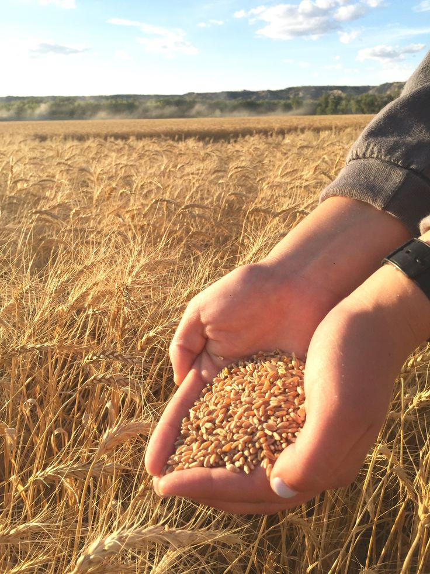
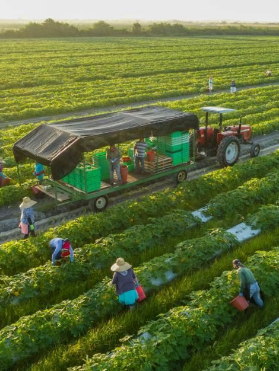
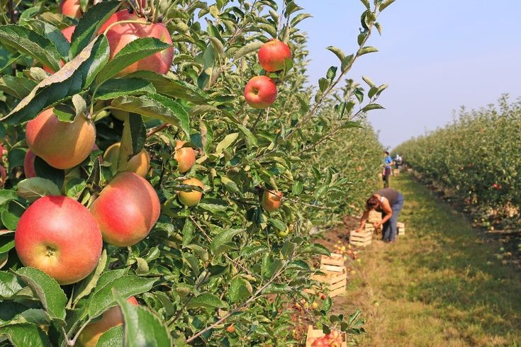
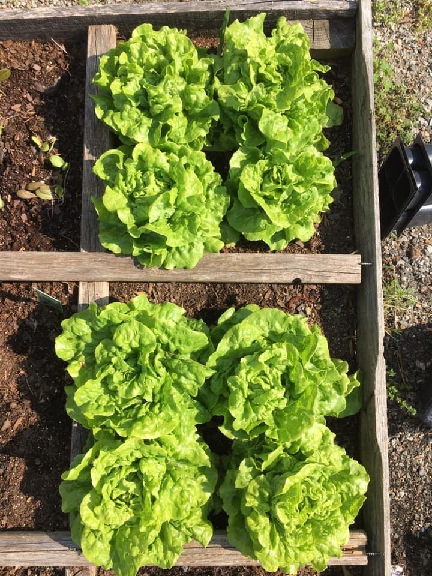
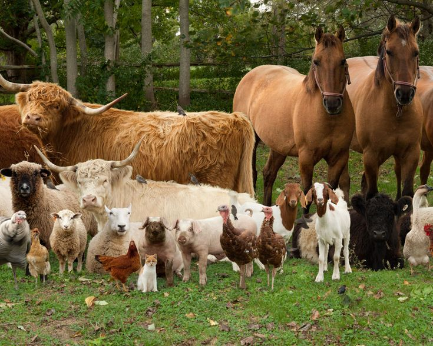
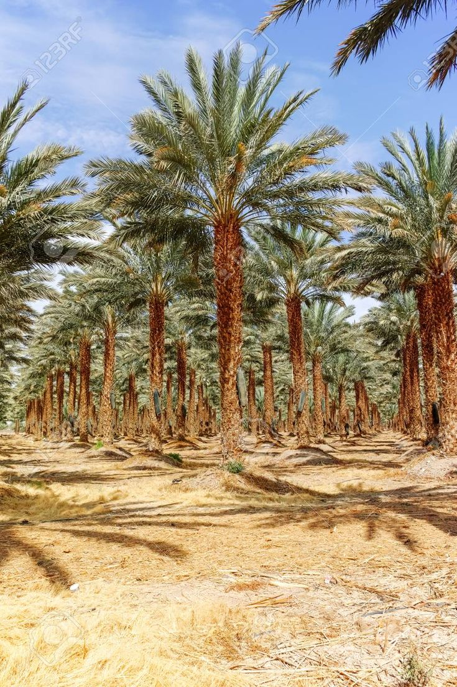
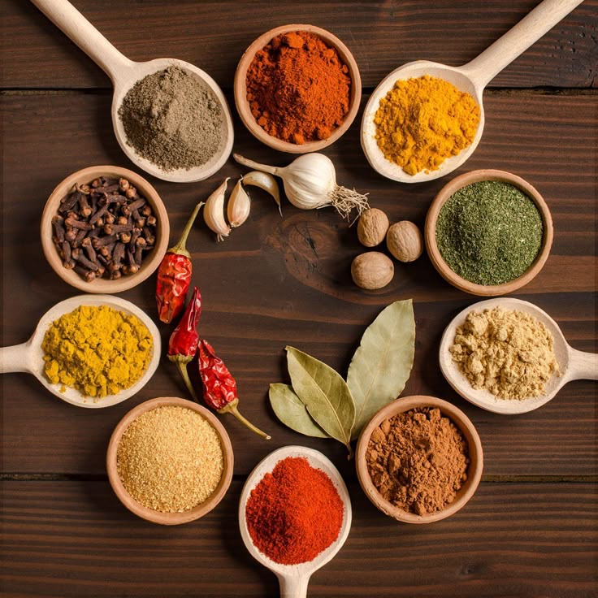

Agriculture types

Olive Farming
Examples: Nabali Olive, Roman Olive
Region: Irbid, Ajloun, Jerash
Average Yield: 2.7 tons/hectare

Wheat & Barley
Examples: Durum Wheat, Two-row Barley
Region: Mafraq, Madaba, Karak
Average Yield: 2.1 tons/hectare

Vegetable Farming
Examples: Tomato, Cucumber, Zucchini
Region: Jordan Valley
Average Yield: 19 tons/hectare

Fruit Orchards
Examples: Citrus, Grapes, Apples
Region: Jordan Valley, Ajloun
Average Yield: 11.4 tons/hectare

Legume Cultivation
Examples: Lentils, Chickpeas, Fava Beans
Region: Mafraq, Karak
Average Yield: 1.9 tons/hectare

Livestock Farming
Examples: Sheep, Goats, Cattle
Region: Badia (Eastern Desert), Karak
Average Yield: Milk: 120 liters/sheep/year

Date Palm Cultivation
Examples: Medjool Dates
Region: Jordan Valley, Aqaba
Average Yield: 6.5 tons/hectare

Herbs & Spices
Examples: Mint, Thyme, Sage
Region: Ajloun, Balqa
Average Yield: 0.9 tons/hectare